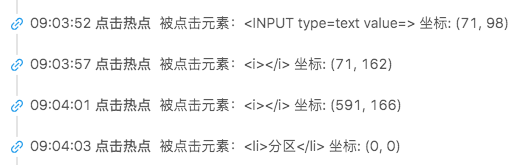

聊聊前端监控（二）--行为监控的技术实现
上一篇梳理了前端监控的主要场景和类型，从本文开始，讨论下我知道的一些技术实现。前端黑科技层出不穷，个人眼界有限，尽量把了解到的实现方式都罗列出来，希望对大家有些启发，同时也欢迎流言讨论。
限于篇幅，按照第一篇的场景来进行拆分，本文只讨论行为监控的技术实现方案：
总体思路
监控系统设计的总体思路上，最重要的是“无痛”或者“无侵入”。
任何监控代码，不在业务系统需要自定义的情况下，需要侵入到业务代码里面，都是不可取的设计。同时接入配置应该尽量简单。
如何做到无痛？主要方式是拦截和重写。
比如，很多监控系统都会重写 xhr（XMLHttpRequest）/ fetch来拦截请求，
例子：xhr 重写上报示例代码
proxyAjax.send = XMLHttpRequest.prototype.send;
proxyAjax.open = XMLHttpRequest.prototype.open;
// 重写 open
XMLHttpRequest.prototype.open = function(){
// 先在此处取得请求的url、method等信息并记录等处理
// 调用原生 open 实现重写
proxyAjax.open.apply(this, arguments);
}
// 重写 send
XMLHttpRequest.prototype.send = function () {
// 调用原生send
proxyAjax.send.apply(this, arguments);
// 在onleadend ontimeout等事件中上报，上报处理函数 handleMonitor
this.onloadend = function() {
handleMonitor(someParams)
}
}
// 上报函数
handleMonitor = function(params) {
this.send(params)
}
比如，在对页面事件的点击记录时，给document对象绑定click事件收集点击就是拦截的一种。
例子：要注意的是在捕获阶段绑定，防止业务代码中的阻止冒泡捕获不到事件
document.addEventListener("click", function(event) {
handleClick(event);
}, false);
1、用户使用场景
下面按照统计维度来说明一下统计指标的技术实现：
1.1 pv，uv
通常的方式对访问当前域名的一个用户植入一个cookies用于标识用户身份，以传统的统计口径来看，对于pv，每次刷新页面都 + 1，对于uv，在今天内访问的用户只会 + 1。这里有几个注意点:
1、统计口径：对于不同的产品，pv的统计口径可能是不一样的，有的要求首页完全加载完才算一个pv，有的要求曝光1/4，有的需要dom加载完。根据需求的不同，绑定上报事件的时机也不同。对于监控系统来说，一般会实现通用口径的pv统计，如果有其他不同需求，可以走后文提到的自定义上报流程。
2、防刷：对于pv/uv，有很多刷流量的方式，比如删掉cookies，重新加载一次。对有账号体系的系统，cookies和账号绑定就可以防刷。对没有账号体系的系统，可以使用ip来限制，同ip发起多少次都算一个uv。防刷是个比较有趣的话题，限于篇幅，这儿简略提一下，有兴趣的同学可以一起进一步探讨。
3、spa网页：由于前端路由的存在，spa结构的网页，传统的pv很难反应网站的真实状况，推荐使用uv或者rpv来观测。
1.2 ip数
访问ip数的统计有多种方式，这里介绍两种主要方式：
1、接入层直接记录：在接入层入口直接记录来源ip，收到就 + 1，如有需要详情也可以记录更多信息，这种方式可能会增加当前系统的一些负担。改造成MQ或者其他的异步方式，可以减轻对主干系统的影响。
2、分析日志：主流做法，分析接入层日志，对日志做统计即可得出ip数。
1.3 跳出率
根据上文提到的跳出率公式，需要计算当前页面的打开次数，对于非spa且非hash的页面，都可以用接入层统计的方式来计算url的打开次数。对使用hash路由的spa页面，需要绑定hashchange事件或者框架提供的路由事件来进行上报。总访问页数同理。
1.4 平均访问时长 / 平均访问深度
根据计算公式，统计方法类似跳出率。
1.5 会话数量
这个没太多好说的，服务端统计就完事了。
1.6 路由切换量（rpv）
重点讲下这个，随着前端路由系统的普及，当前 spa 是web系统的主要形态之一，对spa系统来说，统计的实现方式和 mpa 系统有很多的不同，一般来说统计路由切换量（rpv）需要手动开启配置，比如阿里云arms就需要配置enableSPA = true。
前端路由主要是通过hash和history api来实现的，使用hash路由时hash值不会上传服务器，需要前端来做捕获上报，而history api的情况url是变化的，可以在后台统计到。
hash路由的捕获上报实现：
// hash路由绑定onhashchange事件
if("onhashchange" in window) {
window.onhashchange = handler
}
// history api类型路由的上报
// 监听popstate
window.addEventListener('popstate', (event) => {
// 上报处理
handler()
})
如果前端需要通过 history api来统计，这里也给出一些代码实例
// history 只监听 popstate事件可以处理掉大部分的api触发
window.addEventListener("popstate", function() {
// 上报逻辑
});
// pushState 和 replaceState 不会触发 popstate 事件，可以采用类似xhr的方式重写
2、埋点，点击流
埋点的实现上面其实已经提到了，本质上就是对事件的拦截，这里主要提一下自定义埋点上报的实现。
2.1 自定义埋点
自定义埋点上报，涉及到各监控系统api设计，一般来说，各监控系统的接入sdk都会给出自定义上报的方法，供业务系统自己控制上报时机和上报内容。 举例：
// 自定义埋点实例,指定类型type，服务器解析数据并呈现
monitor.diysend({type:'monitor', value: 't1=1&t2=2'})
2.2 点击流
点击流其实是通过根据统一的用户标识把一系列的事件上报的用户行为串起来的一种方式，结合以上的数据上报和页面切换，可以构造出一个基于时间轴的用户点击操作流程。 示例页面 
3、场景回放，录屏
场景回放和录屏的技术实现，总的来主要有如下实现方式：
dom 背景 + 回放操作：用当前页面做背景，方法：1、iframe加载目标页面放在下层做背景，2、用phantomjs截取当前页面做背景，在背景之上根据上报数据重现用户操作。这种实现不用特殊上报，只需要有点击流的坐标数据即可。但其最大的问题在于回放操作和背景没有交互，即使在背景中实现模拟操作，也可能存在一定的延迟。
html2canvas：顾名思义，此方案的思路是把当前dom结构转化成一张截图，然后按照每秒24帧上传图片，后端和用户操作组合一下，组成一个可播放视频。这种方法的悲催在于上传的图片体积过大，导致出现一些性能问题。
chrome 插件方式：使用chrome的插件权限实现录屏，缺点是完全没有兼容性，而且装插件对用户体验不友好。
dom 上报重建：思路是上报dom并重建，实现：上报首次的dom结构做基础，后续使用增量上报方式，上报dom结构的变化，然后通过后端平台，将数据组装成可播放的视频，这种方式的典型代表有rrweb等实现。这种方式对于canvas之类的非dom表现元素，需要做特殊处理，但已经是个比较成熟可用的方案了。
总的来说，以上录屏方案中，dom上报回放是一个比较成熟的方案了，也有类似rrweb等成熟实践，比较不容易遇到坑，可以考虑使用。
手已敲麻，行为监控的实现先写这么多吧，下篇开始总结下异常监控的技术实现。